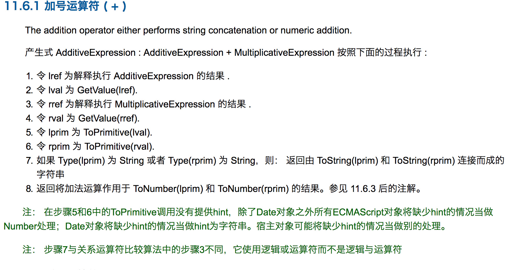
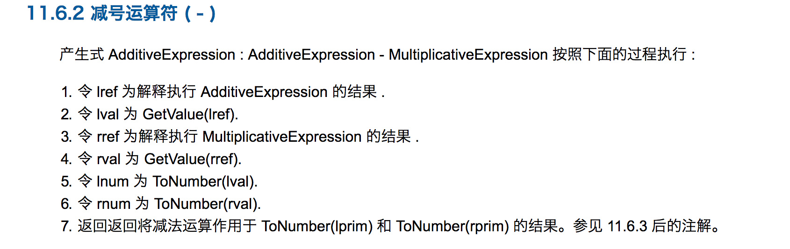

js隐式类型转换
1. 隐式转换
涉及隐式转换最多的两个运算符 + 和 ==。
+运算符即可数字相加，也可以字符串相加。所以转换时很麻烦。== 不同于===，故也存在隐式转换。- * / 这些运算符只会针对number类型，故转换的结果只能是转换成number类型。
既然要隐式转换，那到底怎么转换呢，应该有一套转换规则，才能追踪最终转换成什么了。
隐式转换中主要涉及到三种转换：
1、将值转为原始值，ToPrimitive()。
2、将值转为数字，ToNumber()。
3、将值转为字符串，ToString()。
2. 通过ToPrimitive将值转换为原始值
js引擎内部的抽象操作ToPrimitive有着这样的签名：
ToPrimitive(input, PreferredType?)
input是要转换的值，PreferredType是可选参数，可以是Number或String类型。他只是一个转换标志，转化后的结果并不一定是这个参数所值的类型，但是转换结果一定是一个原始值（或者报错）。
如果PreferredType被标记为Number，则会进行下面的操作流程来转换输入的值。
1、如果输入的值已经是一个原始值，则直接返回它
2、否则，如果输入的值是一个对象，则调用该对象的valueOf()方法，如果valueOf()方法的返回值是一个原始值，则返回这个原始值。
3、否则，调用这个对象的toString()方法，如果toString()方法返回的是一个原始值，则返回这个原始值。
4、否则，抛出TypeError异常。
如果PreferredType被标记为String，则会进行下面的操作流程来转换输入的值。
1、如果输入的值已经是一个原始值，则直接返回它
2、否则，调用这个对象的toString()方法，如果toString()方法返回的是一个原始值，则返回这个原始值。
3、否则，如果输入的值是一个对象，则调用该对象的valueOf()方法，如果valueOf()方法的返回值是一个原始值，则返回这个原始值。
4、否则，抛出TypeError异常。
既然PreferredType是可选参数，那么如果没有这个参数时，怎么转换呢？PreferredType的值会按照这样的规则来自动设置：
1、该对象为Date类型，则PreferredType被设置为String
2、否则，PreferredType被设置为Number
2.1 valueOf方法
valueOf和toString方法是Object.prototype对象中的方法，所有对象都会继承该原型的方法，故任何对象都会有valueOf和toString方法。
对于js的常见内置对象：Date, Array, Math, Number, Boolean, String, Array, RegExp, Function。
1、Number、Boolean、String这三种构造函数生成的基础值的对象形式，通过valueOf转换后会变成相应的原始值。如：1
2
3
4
5
6
7
8var num = new Number('123');
num.valueOf(); // 123
var str = new String('12df');
str.valueOf(); // '12df'
var bool = new Boolean('fd');
bool.valueOf(); // true
2、Date这种特殊的对象，其原型Date.prototype上内置的valueOf函数将日期转换为日期的毫秒的形式的数值。1
2var a = new Date();
a.valueOf(); // 1515143895500
3、除此之外返回的都为this，即对象本身：(有问题欢迎告知)1
2
3
4
5var a = new Array();
a.valueOf() === a; // true
var b = new Object({});
b.valueOf() === b; // true
2.2 toString方法
对于js的常见内置对象：Date, Array, Math, Number, Boolean, String, Array, RegExp, Function。
1、Number、Boolean、String、Array、Date、RegExp、Function这几种构造函数生成的对象，通过toString转换后会变成相应的字符串的形式，因为这些构造函数上封装了自己的toString方法。如：
1 | Number.prototype.hasOwnProperty('toString'); // true |
除这些对象及其实例化对象之外，其他对象返回的都是该对象的类型，(有问题欢迎告知)，都是继承的Object.prototype.toString方法。1
2
3
4var obj = new Object({});
obj.toString(); // "[object Object]"
Math.toString(); // "[object Math]"
3. 通过ToNumber将值转换为数字
根据参数类型进行下面转换：
| 参数 | 结果 |
| :—-: | :—–: |
| undefined | NaN |
| null | +0 |
| 布尔值 | true转换1，false转换为+0 |
| 数字 | 无须转换 |
| 字符串 | 有字符串解析为数字，例如：‘324’转换为324，‘qwer’转换为NaN |
| 对象(obj) | 先进行 ToPrimitive(obj, Number)转换得到原始值，在进行ToNumber转换为数字 |
4. 通过ToString将值转换为字符串
根据参数类型进行下面转换：
| 参数 | 结果 |
| :—-: | :—–: |
| undefined | ‘undefined’ |
| null | ‘null’ |
| 布尔值 | 转换为’true’ 或 ‘false’ |
| 数字 | 数字转换字符串，比如：1.765转为’1.765’ |
| 字符串 | 无须转换 |
| 对象(obj) | 先进行 ToPrimitive(obj, String)转换得到原始值，在进行ToString转换为字符串 |
5. toBoolean
js中的值分为两类：可以被强制类型转换为false的值和其它（被强制类型转换为true的值）
undefined、null、false、+0、-0、NaN、””这些都是假值。我们可以理解为假值列表以外的值都是真值。
比如”false”、”0”、”‘’”、[]、{}这些都是真值。
一般if的括号中需要将内容隐式转换成true和false，基本上都根据这些假值真值来判断。
6. 一元加法/减法运算符
比如一个+oldExp和-oldExp的操作,
newExp = toNumber(oldExp);
newExp = -toNumber(oldExp);
7. 加法运算符
根据规范，如果某个操作数是字符串或者能够通过以下步骤转换成字符串的话，+将进行拼接操作.
如果其中一个操作数是对象（包括数组），则首先对其调用ToPrimitive抽象操作，ToPrimitive的PreferredType被标记为Number，因此先调用该对象的valueOf()方法，如果valueOf()方法的返回值是一个原始值，则返回这个原始值。否则，调用这个对象的toString()方法，如果toString()方法返回的是一个原始值，则返回这个原始值。否则，抛出TypeError异常。
- 如果两个运算数都是数字，则进行加法运算
- 如果两个运算数都是字符串，把第二个字符串连接到第一个上。
- 如果一个是数字一个是字符串，把数字转换成字符串进行连接操作。
- 当存在运算数是布尔类型，并且其他运算数都是数字，则将布尔类型的值转换成数字。
- 当存在运算数是对象，将对象通过toPrimitive转换成原始值，然后将其他的运算数也转换成字符串进行操作

8. 减乘除运算符
减、乘和除没有加法特殊，都是一个性质，这里我们就单独解读减法运算符（-）

- 如果两个运算数都是数字，则进行减法运算
9. &&和||
在js中这两个逻辑运算符返回的并不是布尔值，它们返回的两个操作数中的一个。
||和&&首先会对第一个操作数执行条件判断，如果不是布尔值就先进行toBoolean强制转换，然后再执行条件判断。
对于||，如果条件判断结果为true就返回第一个操作数的值，如果为false就返回第二个操作数的值。
对于&&，如果条件判断结果为false就返回第一个操作数的值，如果为true就返回第二个操作数的值。
10. 例子
({} + {}) = ?
两个对象的值进行+运算符，肯定要先进行隐式转换为原始类型才能进行计算。
1、进行ToPrimitive转换，由于没有指定PreferredType类型，{}会使默认值为Number，进行ToPrimitive(input, Number)运算。
2、所以会执行valueOf方法，({}).valueOf(),返回的还是{}对象，不是原始值。
3、继续执行toString方法，({}).toString(),返回”[object Object]”，是原始值。
故得到最终的结果，”[object Object]” + “[object Object]” = “[object Object][object Object]”2 {} = ?
1、首先运算符只能对number类型进行运算，故第一步就是对{}进行ToNumber类型转换。
2、由于{}是对象类型，故先进行原始类型转换，ToPrimitive(input, Number)运算。
3、所以会执行valueOf方法，({}).valueOf(),返回的还是{}对象，不是原始值。
4、继续执行toString方法，({}).toString(),返回”[object Object]”，是原始值。
5、转换为原始值后再进行ToNumber运算，”[object Object]”就转换为NaN。
故最终的结果为 2 * NaN = NaN
11. == 运算符隐式转换
== 运算符的规则规律性不是那么强，按照下面流程来执行,es5文档
比较运算 x==y, 其中 x 和 y 是值，返回 true 或者 false。这样的比较按如下方式进行：
1、若 Type(x) 与 Type(y) 相同， 则
1 若 Type(x) 为 Undefined， 返回 true。
2 若 Type(x) 为 Null， 返回 true。
3 若 Type(x) 为 Number， 则
(1)、若 x 为 NaN， 返回 false。
(2)、若 y 为 NaN， 返回 false。
(3)、若 x 与 y 为相等数值， 返回 true。
(4)、若 x 为 +0 且 y 为 −0， 返回 true。
(5)、若 x 为 −0 且 y 为 +0， 返回 true。
(6)、返回 false。
4 若 Type(x) 为 String, 则当 x 和 y 为完全相同的字符序列（长度相等且相同字符在相同位置）时返回 true。 否则， 返回 false。
5 若 Type(x) 为 Boolean, 当 x 和 y 为同为 true 或者同为 false 时返回 true。 否则， 返回 false。
6 当 x 和 y 为引用同一对象时返回 true。否则，返回 false。
2、若 x 为 null 且 y 为 undefined， 返回 true。
3、若 x 为 undefined 且 y 为 null， 返回 true。
4、若 Type(x) 为 Number 且 Type(y) 为 String，返回比较 x == ToNumber(y) 的结果。
5、若 Type(x) 为 String 且 Type(y) 为 Number，返回比较 ToNumber(x) == y 的结果。
6、若 Type(x) 为 Boolean， 返回比较 ToNumber(x) == y 的结果。
7、若 Type(y) 为 Boolean， 返回比较 x == ToNumber(y) 的结果。
8、若 Type(x) 为 String 或 Number，且 Type(y) 为 Object，返回比较 x == ToPrimitive(y) 的结果。
9、若 Type(x) 为 Object 且 Type(y) 为 String 或 Number， 返回比较 ToPrimitive(x) == y 的结果。
10、返回 false。
参考：
https://juejin.im/post/5a7172d9f265da3e3245cbca
https://github.com/jawil/blog/issues/5